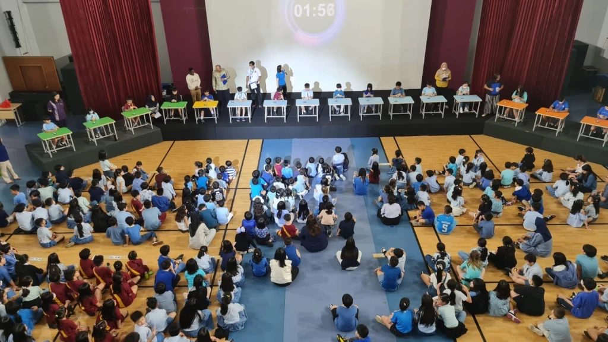

Welcome to [Your Site Name] — a fan-made hub for all things related to the World Cube Association (WCA) and the amazing world of speedcubing!
We’re not affiliated with the official WCA, but we share their passion for the puzzle community. Our goal is to provide cubers of all levels with easy-to-access information, competition details, records, and fun facts from the speedcubing world. Whether you’re here to track the latest results, learn more about your favorite cubers, or just explore the history of the cube, you’re in the right place.
We started this site because we love the creativity, skill, and community spirit that speedcubing inspires. Think of this as your friendly neighborhood cube resource — made by cubers, for cubers.